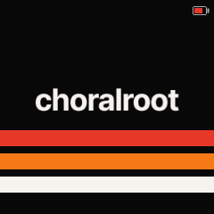
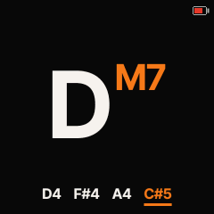
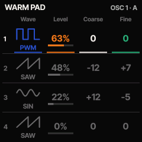
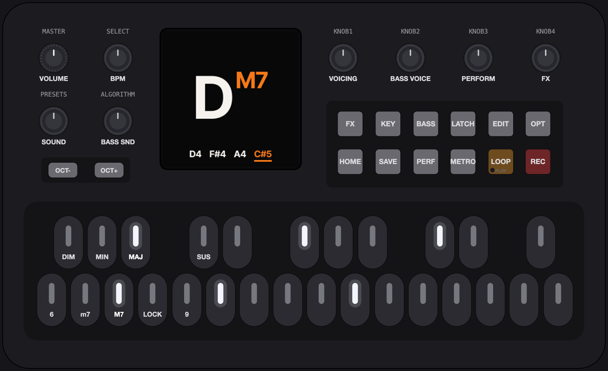
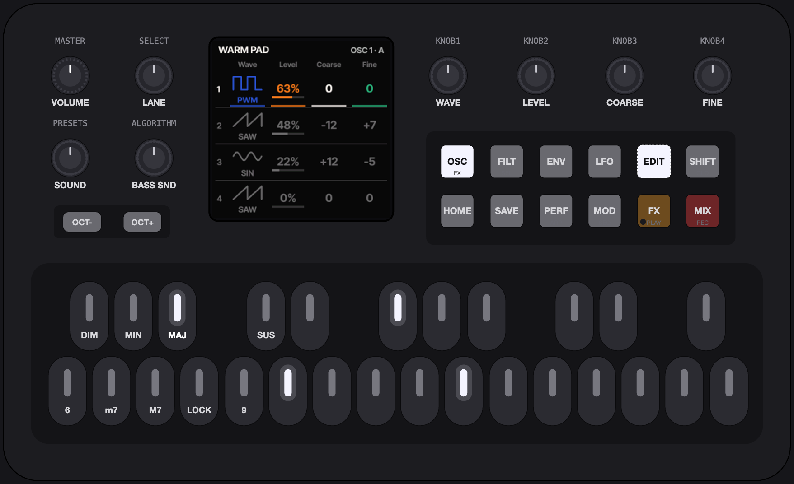
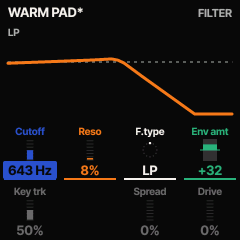
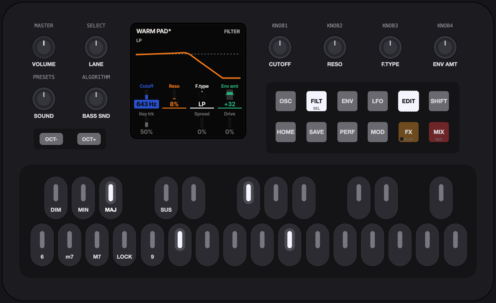

Install {{VERSION}} directly to your FM-1 from Chrome or Edge: the installer walks you through it, shows what is new and can also put an older version back.
Melodic Exploration, Not a Groovebox
One hand plays root notes while the other shapes the chords. The screen shows one thing at a time, BIG.



Get it
Try it first
The exact same firmware, running in your browser. No FM-1 needed. Chrome, Edge and Firefox supported.
{{EMU_NOTE}}
{{NEWS}}
The installer talks to the FM-1 over Web MIDI. The firmware it runs now (stock, Felucca, Melodee or ChoralRoot) stages the update loader, the loader writes the whole image, then the FM-1 restarts and reports {{PRODUCT}}. An update saves a backup first and keeps your settings, sounds and loops. Charge the FM-1 fully first: it writes on its battery, and the installer cannot read its charge. Plug it straight into the computer (no hub), keep the computer awake and leave the cable alone until the installer says Done. If an update is cut off anyway, Recovery has the way back.
On the command line, from the source: pip3 install mido python-rtmidi, then python3 tools/fm1_install.py {{PKG}}. --info prints the connected FM-1's identity.
Playing
The left side of the keyboard is your chord command center. Use the three small black keys to pick a chord type and the four white keys under them to add modifiers like 7ths and 9ths. The LFO button will lock your chord commands. Play a root note on the right and let ChoralRoot handle the rest. We promise, you're in good company.

The chord block, F3 … B3
The roots, C4 … G5. OCT− / OCT+ shift them by octaves, −2 … +2.
Chord types on the black keys F#3 G#3 A#3: DIM, MIN, MAJ, and G#3 + A#3 together: SUS (one finger on both). Extensions on the white keys F3 G3 A3 B3: 6, m7, M7, 9. Both are momentary; extensions stack. A root pressed while the SUS pair is still landing waits for it (Options > SUS Window, 30 ms by default), so a minor chord never turns into a sus chord under your fingers.
Roots on C4 … G5, 20 keys: alone a single note (in Key Mode, the chord the scale puts there), with a type held (or latched) the chord. OCT− and OCT+ shift them by octaves, −2 … +2.
LOCK
The LFO button is LOCK (held: the LOCK layer, two settings for how it latches: a type key clears or keeps the latched extensions; the extension keys toggle or are pushed as a set). Tap it on (LFO lit, lock top right on the screen), tap it again off. With LOCK on, the chord keys held are latched when released, so one hand plays roots. Once nothing is held, a type key resets the latch to that type alone, and an extension key toggles its extension in the latched set. LATCH, which holds the sound, is GLO held + LFO.
Hold MIN, release: minor. 6: m6. 9: m6/9. 9 again: m6. MAJ: major, extensions cleared.
Type keys held together make a Secret Chord (Options > Secret Chords, off by default): all three a power chord, DIM+MAJ augmented, DIM+MIN [0 3 5].
The Classic chord keys
These are the FM-1 chord keys, made for this keybed and the default since 0.25.1: a unit updated from an older version switches to them once. Options > Chord Keys: Classic brings back the Orchid's layout, the default until 0.25: DIM MIN MAJ SUS on F#3 G#3 A#3 C#4, 6 m7 M7 9 on F3 G3 A3 C4, B3 is LOCK, the LFO button is LATCH, and the roots are D4 … G5 (18 keys).


Buttons
Tap = use, hold = open, OCT−, HOME or the same hold again = close.
A tap is the button's on/off action, always. A hold past 0.4 s (Options > Hold Time) opens its layer, and the layer stays open after release (the button blinks); holding another layer button switches layer. A layer is a picker over a row of four cells: KNOB 1–4, in the knob colours, each with a small picture of its value. The chord keys keep their job (in the KEY layer MAJ and MIN pick the scale instead).
| Printed | ChoralRoot | Tap | Hold |
|---|---|---|---|
| SEL | KEY | Key Mode on/off | the KEY layer: a root = the tonic; MAJ / MIN = the scale (their lights show it); KNOB 1–4 = Tonic / Scale / Transpose / Single; SELECT = page 2 (Key plays, Keyboard); GLO = the keys pick the key / play |
| ARP | PERF | the performance mode on/off | the PERF layer: SELECT = the mode (Strum, Strum 2 Octaves, Slop, Arpeggiate, Arp 2 Octaves, Pattern, Harp); KNOB 1–4 = its parameters; the roots play; a tap is still on/off |
| FX | FX | the effects on/off | the FX layer: SELECT = the page (Sends, Reverb 1, Reverb 2, Chorus, Delay 1, Delay 2, Drive); KNOB 1–4 = its cells, Sends' four and KNOB 4 on an effect's first page = the chord part's sends; the effects and their sends are the instrument's and stay when the sound changes; the roots play; a tap is still on/off |
| ENV | BASS | bass on/off (it comes back as last saved) | the BASS layer: SELECT or KNOB 1 = Behaviour (Chords Only / Unison Bass / Bass Single Notes / Solo); KNOB 2–4 = Register / Sound / Level. BASS held + EDIT = the bass sound's editor |
| LFO | LOCK | LOCK on/off. GLO held + LFO: LATCH on/off, notes sound on until the next ones; it keeps an arpeggio running (Classic chord keys: LFO is LATCH, a tap) | the LOCK layer (Classic: —) |
| GLO | OPT | the Options open/close | held + a knob = the knob's second job: PRESETS the chord sound's engine, ALGORITHM the bass sound's engine (in the layers too, since 0.19), KNOB 1 split point, SELECT metronome level; held + SEQ = metronome on/off. In the editor: SHIFT |
| HOME | HOME | back to the view from anywhere; on the view: the next view (Chord / Keyboard / Notes / Geek Out / Scope) | 0.6 s: the view menu: SELECT = the view, KNOB 1 = Lock |
| SAVE | SAVE | the save dialog: Overwrite, or Save as new, named with the keys | save everything as it is now, the loop included (saved). With GLO, both held a second: back to the last save (reverted) |
| SEQ | SEQ | the loop editor (the loop as a pattern of steps); again: the PLAY menu; again: back to the view. With GLO held: metronome on/off | the SEQ key's hold menu (metronome): SELECT = the time signature (4/4, 3/4, 6/8); KNOB 1 = the click's level |
| PLAY | LOOP | play / stop the loop (green light = it plays); while recording: ends the take | the PLAY menu: PRESETS = the slot, 1–10; ALGORITHM = the record mode; SELECT = the page; KNOB 1–4 = Length / Rate / Quantize / Count-in, page 2: KNOB 1 = Level, KNOB 2 = Metronome; GLO = the keys play or pick slots; EDIT = the loop editor |
| REC | REC | record, the way the record mode says; again: ends the take. The REC light blinks while recording | undo the last layer |
| EDIT | EDIT | the sound editor on the chord sound | the engine picker |
| OCT− / OCT+ | OCTAVE | the octave of the roots; in layers, menus and dialogs: back (closes) / confirm (closes too where there is nothing to confirm) | both together: PANIC (every note off, on MIDI too; the octave back to 0, the LOCK latch cleared, LATCH off, the loop stopped) |
Rotaries
No push switches. A turn of any knob but MASTER shows its value big for a second.
| Printed | ChoralRoot | Turn | OPT held |
|---|---|---|---|
| MASTER | VOLUME | the volume (the pot) | — |
| SELECT | BPM | the tempo, 20–300; in a layer or a menu: its picker | metronome level |
| PRESETS | SOUND | the chord sound: the next or previous one of its engine; it loads at once | the chord sound's engine |
| ALGORITHM | BASS SOUND | the bass sound: off, then the sounds of the bass's engine | the bass sound's engine (BASS held instead: bass level) |
| KNOB 1 | VOICING | the Orchid's chord voicing: the lowest note up an octave, or the highest down; one click = one note. Never reassigned outside layers and the editor | single-note split point |
| KNOB 2 | BASS VOICE | the bass register, in octaves | — |
| KNOB 3 | PERFORM | the performance mode's first parameter: strum rate, slop amount, arp division, pattern, harp rate | — |
| KNOB 4 | FX | the chord part's send into the selected effect (a turn switches the effects on) | — |
The looper
It records chords, not audio, so a playing loop follows the sound you choose now, the voicing on KNOB 1, the performance mode and the bass. On a new FM-1, tap REC and play: the first chord starts the take, REC or LOOP ends it, and the loop plays at once. The PLAY menu (LOOP held) has ten slots, five record modes (Overwrite, Advance, Overdub, Replace, Step) and the length of the next take: Free, or 1, 2, 4, 8 or 16 bars after a count-in. The loop can run at a quarter of its speed up to four times it (Rate), and EDIT in the menu opens it as steps to change one at a time. A loop is kept in its slot when you hold SAVE, and when you move to another slot: record over one by accident and GLO + SAVE brings the saved one back. The looper in the manual.
Options
OPT tap opens them, one setting per screen. SELECT steps through the settings, KNOB 1 sets the value, and OPT, HOME or OCT− leaves. The keys keep playing while the Options are open, so you can hold a chord and hear a setting change. Play Style (Simple / Advanced / Free), Extension Addition, Secret Chords, 6th with 7th (Octave up plays the 6th of a seventh chord an octave higher, as a 13th; off by default), Velocity, Bass Behaviour, Single Notes, Split Point, the MIDI Perform / Bass / Raw Chord channels, Raw Chord Sound, MIDI Clock, View, Motion, Chord Names, LEDs, Hold Time, USB Record, USB Level, USB Rate, Dual Core, Output, Version, Calibrate, Reset Settings. The manual says what each one does.
Output (new in 0.19) is the last stage before the headphones, the speaker and the USB recording. Clean, the default, has less distortion on full chords and at low MASTER settings; a single note is a little quieter. Classic is the output stage of 0.18 and before, kept so that you can compare: hold a chord in the Options and turn KNOB 1. The chorus is stereo since 0.19, in both.
Dual Core is Off by default since 0.16: one core, as the stock firmware runs. On (after a restart) gives the bass the chip's second core and its own voices; it is the first thing to turn off if an FM-1 ever crashes or resets while playing.
Screen
The chord name fills the screen (the Orchid's naming, squeezed to fit), the voiced notes under it, extensions in orange; Key: C top left in Key Mode. Five views: Chord, Keyboard, Notes, Geek Out, Scope. HOME on the view steps to the next; HOME held opens the view menu, where Lock keeps a HOME tap from changing it. Pickers instead of lists, meters of bold stripes, a recording or playing loop as a small red dial at the right of the top line. Panic turns the screen red.
The sound editor
EDIT tap opens it on the chord sound, BASS held + EDIT on the bass sound; inside, SHIFT + EDIT switches between them. EDIT tap or HOME leaves. Every group remembers its screen and lane.


Groups
The buttons become seven groups. The top row is the signal flow (OSC on the printed FX, FILT on SEL, ENV, LFO), the bottom row the output stage (MOD on SEQ, FX on PLAY, MIX on REC). A group's button opens the group; tapped again, its next screen. Every engine fills the same groups with its own screens; the manual lists them engine by engine.
Lanes
SELECT runs through the lanes, and on into the group's next screen. A lane is the four values on KNOB 1–4, always in the same four colours.
KNOB 1
KNOB 2
KNOB 3
KNOB 4
A detent is about 5 % of the range, or one step of a list. SHIFT (GLO: a tap latches it, a hold is momentary) makes it one unit a detent.



The engine picker
EDIT held, or PRESETS turned in the editor, opens it as a preview. SELECT steps the engines: FM6, FM TONE, VA, CZ-1 and WHEEL. KNOB 1 turns through the engine's presets, KNOB 2 inits the sound, and the keys play all the while, so you hear each one as you turn to it. OCT+ or EDIT keeps it; OCT− or HOME cancels, and the sound comes back.
Quick mapping
For an engine with a matrix (the VA): ENV held + a knob turned, and the envelope last shown modulates that knob's parameter, the amount on the knob. LFO held + a knob does the same with the LFO. OCT− held + a knob clears the parameter's modulation. A modulated cell carries a small mark in the source's colour.
SAVE
SAVE opens the save dialog: Overwrite or Save as new, on KNOB 1 or SELECT. SAVE again or OCT+ takes the choice, OCT− cancels. Overwrite saves at once under the same name, over a factory preset too. Save as new adds the sound at the end of its engine's presets and asks for a name: the white roots type it, D#4 is a space, F#4 deletes. SAVE held 1 s in the dialog offers to delete a sound of yours, or to reset a factory preset you saved over. There is room for 32 saved sounds in all, chord and bass together.
Sounds
Two sounds at once: the chord sound on PRESETS, the bass sound on ALGORITHM. Each belongs to one of five engines, and every engine keeps one pool of presets.
FM6's pool PRESETS 01–25
- TINE EP
- FM BELL
- FM BASS
- BRASS
- FM PAD
- MARIMBA
- FM ORGAN
- FM PLUCK
- DX TINE
- BRASS SECT
- SOLID BASS
- BELLS
- DX MARIMBA
- CLAVINET
- DRAWBARS
- STRINGS
- GLASS PAD
- SYNC LEAD
- HARP
- KALIMBA
- FLUTE
- STEEL DRUM
- SAW BASS
- TUBULAR
- PIANO
Where a new FM-1 starts: FM6, TINE EP.
A pool is 00 INIT (the engine's plain starting sound), then its factory presets, then the sounds you saved into it. PRESETS turns through the pool of the chord sound's engine and wraps round; the screen reads the engine's name in orange over the place (FM6, 02), a stripe for every preset, and Hold OPT to change engine. OPT held + PRESETS turns through the engines, and you land on the sound you last used there. ALGORITHM does the same for the bass, with 00 off in front: on a new FM-1 the bass is the VA's DEEP SUB.
Engines OPT + PRESETS
- FM6 · 25
- FM TONE · 16
- VA · 25
- CZ-1 · 64
- WHEEL · 5
Each with its number of factory presets.
All synthesis: Felucca's WHEEL (tonewheel organ); Melodee's FM6 (six-operator FM that plays DX7 voices) and CZ-1 (Casio's phase distortion, with its 64 tones); and ChoralRoot's VA and FM TONE (four-operator FM). No samples: the firmware leaves out Felucca's SAMPLE, GRAIN and DRUM engines, and since 0.14 its ANALOG. The VA replaces it, and a sound saved on ANALOG loads on the VA.
The VA
ChoralRoot's own four-oscillator virtual analog, written for this project in fixed point: four oscillators (basic waves, a morphing wave from sine to pulse, or white / brown / vinyl noise), a state-variable filter that morphs LP → BP → HP → notch with spread and drive, four AHDSR envelopes, four LFOs (free or synced to the tempo) and an eight-slot modulation matrix, in stereo. Every parameter is on the editor's screens, and a patch saves with the sound.
MIDI
USB MIDI in and out, TRS MIDI in. Over the same USB cable the computer records the FM-1.
Out
Three streams over USB, each with its channel in Options: Perform (the chord as played or performed) on channel 1, Bass on channel 2, and Raw Chord (the plain chord), Off by default: give it a channel of its own (the Orchid uses 3). MIDI clock goes out too (Options > MIDI Clock: Out, the default), with start and stop as the loop starts and stops.
In
Notes on the Perform channel play the chord sound directly, with no chord generation, as on the Orchid; notes on the Bass channel play the bass sound. CC 7 is the part's level, CC 91 / 93 / 94 its reverb / chorus / delay amounts; program change picks the place in the engine's pool. With MIDI Clock: In, the tempo follows the clock and the loop follows start, continue and stop. SysEx carries updates, backups, the device manager, and DX7 voices and Casio tones into FM6 and CZ-1 sounds.
USB recording
The computer sees an audio input, ChoralRoot In: class compliant, no driver, six channels at 44.1 kHz. For the phones, tablets and apps that only take 48 kHz, set Options > USB Rate to 44.1 + 48 kHz: the computer or phone can then choose 48 kHz too, which the FM-1 converts for it (off by default: the conversion takes some processor time while a recording runs). Channels 1–2 are the master (what you hear, without the metronome click), 3–4 the chord sound alone and 5–6 the bass sound alone, both before the reverb, chorus and delay. The computer cannot play audio through the FM-1, and there is no Bluetooth MIDI. MIDI and USB in the manual.
Recovery
From 0.16 on, ChoralRoot checks at every start that its firmware was written completely. To switch firmwares, use M-Flasher and the M-Bootloader; M-VAVE's own M-Updater restores the stock firmware completely.
If an update is interrupted (the cable, the battery, the computer going to sleep): switch the FM-1 off and on again. Some of the key lights flash three short times and the screen stays black: the FM-1 is in update mode. Open the installer and press Install again; it finishes the write. If only the computer side stopped while the FM-1 stayed on, it is still in update mode: replug the cable and press Install again. The update to 0.16 from an older version is the last one without this protection during its first second.
Update mode on purpose: hold OCT− alone while switching on. Three short flashes and a black screen: open the installer and Install, or switch off and on to start ChoralRoot again (nothing was written). The gesture is new in 0.16; recovery after an interrupted update does not depend on the key.
If the FM-1 stays dark (a black screen with a disk named WL82 UBOOT1.00 on the computer, or nothing on USB at all): do not format the disk. Follow "If the FM-1 no longer starts" in the README and the checklist in INSTALL-COMPAT.md, which lead to MvaveFM1Unbricker.
Switching to or from another firmware: use M-Flasher with the M-Bootloader (Windows, macOS, Linux). M-Flasher works through the chip's USB download mode whatever runs on the FM-1, backs up the whole flash first and installs any firmware's .fwsc package, ChoralRoot's included; the M-Bootloader adds download mode from the keys (REC while switching on) and a recovery menu. Press Back up in ChoralRoot's installer first, and Restore after coming back. No detour through the stock firmware is needed.
Back to the stock firmware completely: M-VAVE's own updater, M-Updater, from M-VAVE's downloads page, reflashes the firmware and its factory presets. The installer's Return to official V15 writes the V15 firmware only, without the presets.
Back up on the installer page saves everything stored on the FM-1 (the settings, the 32 saved sounds with their patches, the ten loops, the FM6 voice bank and the CZ-1 banks) to one .json file, and Restore writes it back. Single sounds travel as files from its Sounds section, or with the device manager.
SAFE MODE, the panel calibration and one long flash instead of three: Updating and recovery in the manual.
Credits and licence
ChoralRoot was made by Quixotic7 with the assistance of his AI Overlords: Claude Fable 5.1 and Claude Opus 5.5. ChoralRoot is free, don't like something, feel free to make your own version. ChoralRoot FM-1 is free software under the GNU General Public License, version 3 only: LICENSE. The package and this site carry LICENSING.md and the licence texts in LICENSES.
- Felucca by Leo Kuroshita (@kurogedelic), Hügelton Instruments: the platform, the engines, the installer, the update loader; with its CrispyZebra waveforms (the PHASE engine) and its Fukiai icons (MIT). github.com/hugelton/Felucca
- Melodee by Kerem Kilic (Ellic Studio), GPL-3.0: the FM6 engine as it plays here (DX7 voices as Dexed renders them), the CZ-1 engine, the USB audio recording, and the work that makes the second core robust. github.com/keremimo/melodee
- SLOOP (GPL-3.0), after Felucca 1.1.5: USB recording at 48 kHz, its resampler's filter; and the designs of the Clean output's look-ahead limiter and of the stereo chorus (written anew, no code copied). github.com/isod89/sloop-fm1
- The chord logic is inspired after the Telepathic Instruments Orchid ORC—1 and Quixotic7's prior monome grid iii adaption choralroot.
- Inter Tight by The Inter Project Authors (SIL OFL 1.1, OFL.txt): the UI font, and this page's.
- DaisySP (Electrosmith, Emilie Gillet) and Rings (Emilie Gillet), MIT: the PHYS engine, in the source tree; not in the firmware since 0.18.
- msfa (Google, Apache-2.0) and Dexed (Pascal Gauthier, GPL-3.0-or-later): the FM6 engine's synthesis. The MAME uPD933 model by Devin Acker (BSD-3-Clause): the CZ-1's. fm1-x0x (GPL-3.0): the second core's bring-up.
- JieLi AC79 SDK: the package holds three of its files (uboot.boot, cfg_tool.bin, eq_cfg_hw.bin; JieLi Technology, Apache-2.0). No M-VAVE material.